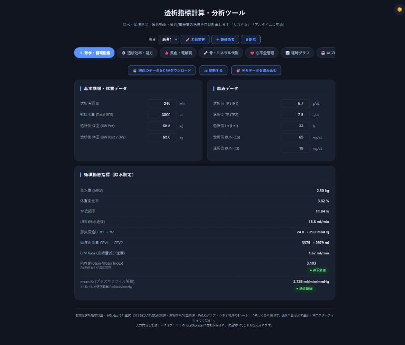
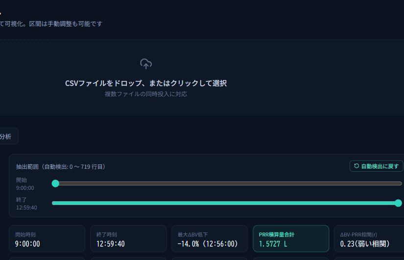
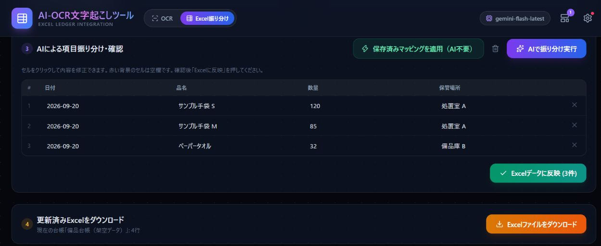

For Business
個人事業主・
経営者の方へ。
AIの使いどころを、いまの業務から一緒に探します。Excel・Googleスプレッドシートの自動化、社内勉強会、Webサイト制作まで対応します。
AI導入・伴走支援を見るAbout
現場を知るから、
一緒に考えられる。
きっかけは、約90人分のデータを手入力していた日々でした。透析患者さんの採血データや内服薬の情報を1人ずつExcelへ入力し、その作業だけで1人あたり10〜20分。残業しながら進めるなかで「この作業をAIで効率化できないか」と考えたことが出発点です。
だから大切にしているのは、現場の手順に合うこと。今の作業を一緒に整理し、画面を見ていただきながら使いやすい形へ調整します。
- 名前
- 田代 裕貴（たしろ ゆうき）
- 屋号
- Nexsist.cs
- 資格
- 臨床工学技士／第2種ME技術実力検定
- 現場の経験
- 血液透析、VA管理・シャントエコー、医療機器管理、透析データの管理・分析
- 使う道具
- Excel・VBA、Google Apps Script、Claude Code、ChatGPT・Claude
病院の臨床工学科で臨床業務の基礎を築く
透析・内視鏡・カテーテル室業務に従事。
透析と医療機器管理を担当
透析患者さんの治療支援と、透析装置・関連機器の管理を経験。
透析クリニックで臨床と院内DXを実践
臨床業務に加え、データ管理・分析、マニュアル整備、業務の自動化に取り組む。
Nexsist.csとしてAI・DXの活動を開始
院内DXの企画・開発・導入・運用を軸に、GASによる自動化、AI活用支援、Web制作に取り組む。
Works
小さな不便から、
生まれたもの。
転記・集計の手間をどう変えられるか。現場の課題を出発点にした3つの制作実績です。

01 — 医療・計算
透析指標計算・分析ツール
ツールを開く
02 — データ処理
透析CSV解析ツール
ツールを開く
03 — 記録・転記
AI-OCR・Excel振り分け
ツールを開く掲載画像はサンプルデータによる動作例です。院内での活用・効果は本人の実務事例（2026年9月時点）です。
すべての制作実績を見るService
相談できること。
決まったパッケージを当てはめるのではなく、課題と規模を確認して必要な範囲から始めます。
i.
業務改善ツール
記録・集計・計算・CSV処理など、現場の具体的な作業から要件を整理します。すでにあるツールやスプレッドシートの調整にも対応します。
ii.
AI研修・勉強会
記録・要約・資料作成など日々の業務を起点に、専門用語を抑えた資料とデモで使い方を伝えます。
iii.
Web・資料制作
プロフィール、LP、手順書、教育資料を、伝える相手に合わせて制作します。
- 対象
- 個人・小規模クリニック・チームから相談可能
- 対応エリア
- オンライン対応のため全国から相談可能
- 料金
- 内容・規模に応じて事前にお見積もり。公開ツールは無料で試せます
Flow
ご相談から納品まで。
- 01
お問い合わせ
メールまたは公式LINEから。相談内容が固まっていなくても構いません。
- 02
ヒアリング
現在の作業、困っていること、使っているツールをオンラインで確認します。
- 03
ご提案・お見積り
対応できる範囲、進め方、費用を着手前にお伝えします。
- 04
制作・調整
実際の画面を見ていただきながら、現場で使える形まで調整します。
- 05
納品・フォロー
使い方を共有します。運用後の小さな修正にも対応します。
Scope
できること、
できないこと。
線引きが曖昧なご相談も、まずはお問い合わせで確認します。
対応できること
- 現場の作業を出発点にした業務改善ツールの開発
- AI研修・勉強会（参加者に合わせた資料・デモ）
- ホームページ・LP・手順書・教育資料の制作
- すでにあるツールやスプレッドシートの調整
対応していないこと
- 医療機器そのものの改造・保守、診断や治療方針の判断
- 個人情報・患者データをお預かりしての作業（サンプル・ダミーデータで設計します）
- 24時間の運用監視や緊急対応をともなう常駐支援
Notes
これまでの歩み。
- 公開AI導入・伴走支援の案内ページを公開しました
- 実績制作実績の一覧ページで、各ツールの制作背景と確認の範囲を紹介しています
- 活動Nexsist.csとしてAI・DXの活動を開始しました
- 経歴透析クリニックで臨床業務と院内DXの実践を始めました
FAQ
よくあるご質問。
個人や小規模のクリニックでも相談できますか？
はい。規模を問わず、まず現在の作業と困りごとを整理するところから始めます。
AIの知識がなくても大丈夫ですか？
はい。専門知識を前提にせず、実際に使う場面に合わせて説明します。
費用と期間はどのように決まりますか？
内容・規模・必要なサポート範囲を確認し、着手前に見積もりと進め方をご案内します。
研修の人数や所要時間は？
参加者の人数、知識、扱うテーマに応じて個別に設計します。ご希望の人数と時間をお問い合わせ時にお知らせください。